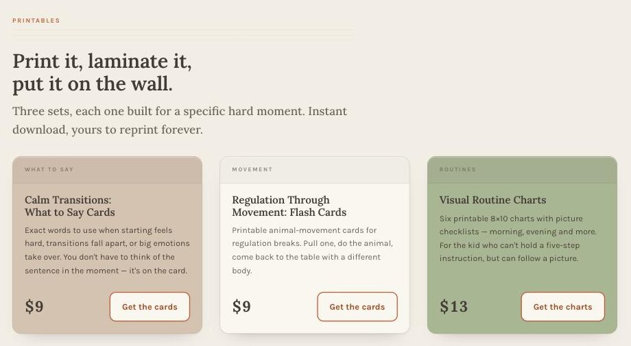
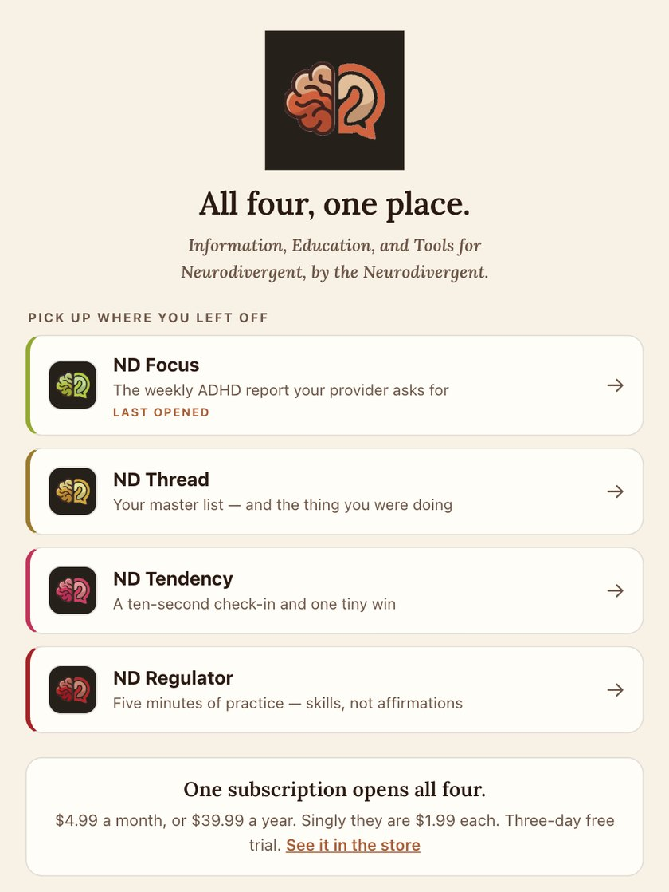
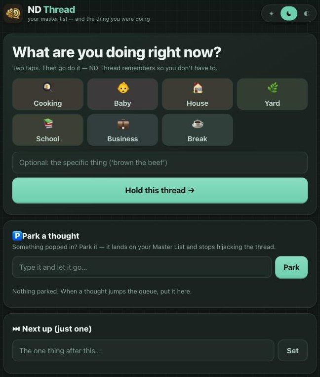
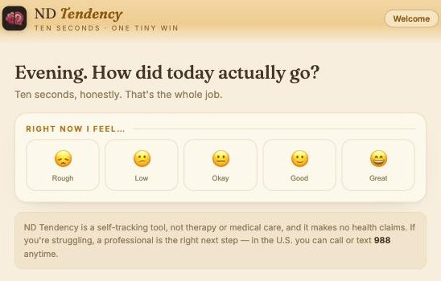
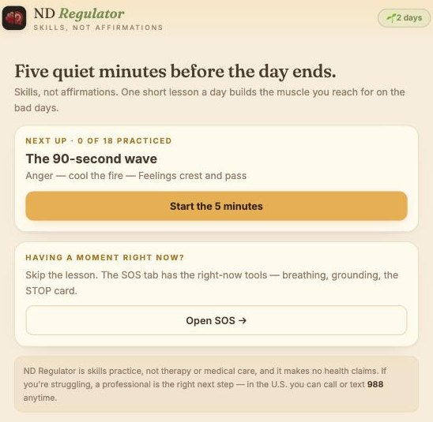
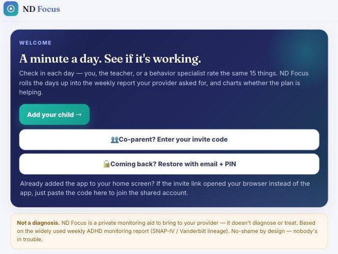

Meet The Neuro~Divulge
The mark · a brain, and something to say about it
If you are reading this at the end of a day that beat you, this one is for you.
Maybe it was your kid’s day that came apart. Maybe it was your own. The shoes were a fight, or the list was, or the thing you walked into the room for was gone by the time you got there. Somebody ended up crying on the stairs, and it might have been you. And tomorrow you get up and do it again, with nobody handing you a manual.
The family behind this line knows that day. They live in that house.
Most of what is on our shelves started with a business that needed an operating system. This line did not. This one was started with a more personal need.
The Neuro~Divulge is made by a family: a nurse, and a teacher, dad and geek, in a home where neurodivergence runs. Who they are stays theirs; the who is not the point. The point is that none of this came out of a study. It came off a real table. A regular Tuesday there can come apart before eight in the morning, and for years they made whatever they needed to put it back together. A card with the exact words on it. A chart with pictures instead of instructions. A list that remembers what you were doing when you walked through a doorway and lost it.
At some point there was enough of it that it needed a name. The name is The Neuro~Divulge.
What the name means
To divulge is to tell what you know. The line on the mark says the whole purpose in one breath:
That is three jobs, taken in order of honesty. Tools are what exist today: the apps and the printables. Education is the short videos, and the podcast when it arrives. Information is the writing, which lives in the Notes on the site. Nothing in the line is a diagnosis, a therapy program, or advice from someone who read about it once. It is what worked in one real house, handed over by the people who live in it. Our part is the software: we build and support the apps.
The rule for what goes on the site is short. If it helped in that house, it goes up. If it did not, it does not.
The store
neurodivulge.com is the front door. It is small on purpose. Today it holds a free checklist, three sets of printables, the door to the apps, and the way to the videos.

The printables shelf · print it, laminate it, put it on the wall
- The ND Homeschool Reset Checklist — free. A sensory-informed way back for the days the homeschool has come off the rails. One email with the download. No list, no drip, nobody selling your address.
- Calm Transitions: What to Say Cards — nine dollars. The exact words for when starting is hard, a transition falls apart, or a big feeling takes over. You do not have to think of the sentence in the moment. It is on the card.
- Regulation Through Movement: Flash Cards — nine dollars. Animal-movement cards for regulation breaks. Pull one, do the animal, come back to the table with a different body.
- Visual Routine Charts — thirteen dollars. Six printable eight-by-ten charts with picture checklists, for the kid who cannot hold a five-step instruction but can follow a picture.
Every one of them is an instant download you can reprint forever. They were made by the nurse, who also runs the homeschool at that table every morning.
Four tools that became one app
Here is the part nobody planned.
The four phone tools were never designed as a set. Each one was built on its own, in its own week, for its own problem. One for the lost thread. One for the mood nobody was tracking. One for the blowups. One because a provider asked for a weekly report and paper was not cutting it.
Lined up side by side, it was obvious what they were. Four answers to the same house. So they came together under one roof: one front door, one mark in four colors, one subscription. Open it and it picks up where you left off.

The app · all four, one place
Every tool in the line is named ND and then one word, and each wears the same brain mark in its own color. The clay color belongs to The Neuro~Divulge itself; no tool borrows it. That is how you know, on a crowded phone, that these four belong to each other.
 ND Thread
ND Thread
Your master list — and the thing you were doing
ND Thread is for the doorway problem. You walk into a room and the reason you came is gone. So the first screen asks one question: what are you doing right now? Two taps, and it holds that thread for you. When your head wipes it, the card is still there.
Behind that is a master list that works the way a busy head does. Write things down in any order and number them afterwards. Put notes under any task. Finished work turns yellow and stays on the list, so at the end of the day you can see the day you had instead of a blank page. A thought that barges in gets parked, so it stops hijacking what you were doing. There are tap-through quests for the kids with no fail states and no timers, and a place to record where things live, for the keys and the glue stick your eyes keep skipping over.

ND Thread · hold this thread
Everything in it stays on your device. No account, nothing collected.
 ND Tendency
ND Tendency
Ten seconds · one tiny win
ND Tendency is a ten-second check-in. Rough, low, okay, good or great. That is the whole job. Then it hands you a few small actions sized to the day you are actually having. A rough day gets the smallest steps there are: drink a glass of water, open a window. A great day gets the ambitious thing, while the wave is up. It is not a to-do list. You pick one, and finishing it is the whole victory.
Over two weeks the check-ins become a trend you can read. Patterns, not judgments. Every win you finish is kept in writing. Your data never leaves your phone, the export is free forever, and erasing really erases.

ND Tendency · ten seconds, honestly
 ND Regulator
ND Regulator
Skills, not affirmations
ND Regulator is five minutes of practice a day for anger, stress and anxiety. It is a ladder: three tracks, a rung at a time, and week six is not supposed to feel like week one. The lessons are the plain, widely taught ones. Name the feeling. Ride out the ninety-second wave. Change the body and the mind follows. Make the repair when you got it wrong.
And for the moment that is happening right now, there is an SOS tab with nothing to read and nothing to buy: box breathing, the long exhale, five-four-three-two-one grounding, and the STOP card. Stop. Take a breath. Observe. Proceed.

ND Regulator · the lesson, or the SOS
It says so on its own screen and we will say it here: this is practice, not therapy and not medical care. If things are heavier than an app, a professional can do what an app cannot, and in the United States you can call or text 988 any time.
 ND Focus
ND Focus
See whether the plan is working
Anyone who has sat in that appointment knows the question. How has the last month gone? And you open your mouth and realize you cannot answer it, because nobody can remember a month of Tuesdays. You remember the worst day and the most recent day, and the plan gets decided on those two.
ND Focus is for that chair.
It is a minute a day. The parent, the teacher or a behavior specialist rates the same fifteen things: the hard ones, like staying seated and following directions, and the good ones, like seeming happy and in a good mood. There is a quick-day button for smooth, mixed or rough that fills all fifteen so you only adjust what was different. Each person logs their own read of the day.
Then it does the part that paper never did. It rolls the days into the weekly report providers ask for, built on the monitoring format they already use, and it charts three lines over time: inattention, hyperactive and impulsive, and the positives. When a dose or a plan changes, you mark it, and a dashed line lands on the chart, so everyone can see what happened after. Before the appointment, you print the report.

ND Focus · a minute a day
It is built for a team. Both parents and the specialist can share one account and see the same trends from their own phones. A teacher gets a rater link that needs no account and shows only that day's form, never the history. A gentle evening reminder says only “log today,” nothing personal. The child is a first name or initials, and nothing else is stored. No ads, no tracking, and nobody is in trouble. It is not a diagnosis. It is a clear picture to carry into the room where the decisions get made.
What it costs
One subscription opens all four: four dollars and ninety-nine cents a month, or thirty-nine ninety-nine a year. Singly, each tool is a dollar ninety-nine a month or nineteen ninety-nine a year. There is a three-day free trial on the whole thing, and like everything in our store, you add it to your phone in three taps with no app store in the middle.
What comes next
The tools work. Now they need to look like what they are, which is one family.
Look at the pictures above and you can see each one still wears the clothes it was born in. ND Thread is dark and mint. ND Tendency and ND Regulator are warm cream. ND Focus is its own thing entirely. Each look was right for the week it was built. The next wave gives all four one coat of paint, so moving from one tool to the next feels like walking down a hallway instead of changing houses. Same tools, same intent, one home.
After that, the rhythm is the same one we keep everywhere: frequent updates, a little better every visit, and new content on a steady beat. More printables as they prove themselves at the family’s own table. More Notes. More short videos from an ordinary week. And a podcast is planned, a two-person show, husband and wife, about what this actually looks like from both chairs of the same house. When it is real, it will be on the site. Until then we will not pretend it exists.
Come find it
The videos go up on TikTok first, then everywhere else. If you want to see the week as it happens, that is the place.
Nothing here started as a product. It started as the thing somebody made because the morning had already gone wrong and tomorrow needed to go differently.
Here is the thing worth hearing sooner than most people hear it. Nobody in your house is broken, you included. You are not failing. The day is just built for a different kind of brain than the ones at your table, and somebody has to stand in the gap. That is hard, quiet work, and almost nobody sees you doing it.
You are seen. There is a family in the next house over doing the same thing, and they made all of this. If one card, one chart or one ten-second check-in makes tomorrow morning go a little differently at your table, then everything here did its second job.